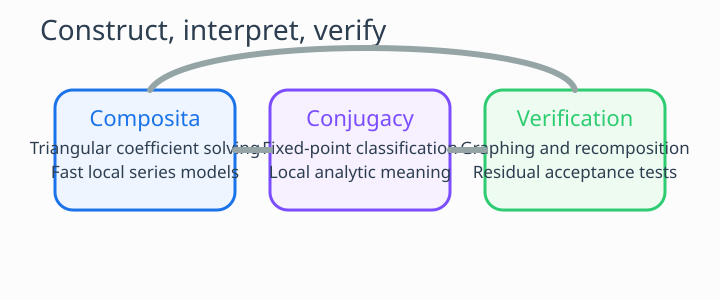

Comparing Numerical and Local Analytic Methods for Half-Iterates
1. Motivation
There is no single method that dominates every half-iterate problem. A truncated power series is often fast and algebraically transparent, but it is tied to a normalization point and a truncation order. A local analytic conjugacy may explain the geometry of iteration beautifully, but only near a suitable fixed point. Direct numerical recomposition is essential for checking what the formal manipulations actually achieved.

2. Three Complementary Approaches
- Composita / truncated-series method. Expand \(F\) as a power series, solve the triangular coefficient system, and recompose to the chosen order. This is excellent when the target naturally lives as a formal series with \(F(0)=0\) or can be normalized into that form.
- Local analytic conjugacy. Around a fixed point \(x_0\), translate to \(y=x-x_0\). If the multiplier is positive and non-parabolic, solve a truncated Schröder equation and define the local half-iterate from the square root of the multiplier.
- Direct recomposition and sampling. Always test the proposed candidate numerically by comparing \(f(f(x))\) with \(F(x)\) on a neighborhood or interval. This converts formal output into a practical acceptance criterion.
In the upgraded solver, these approaches are deliberately separated in the user interface, but they are meant to inform one another. The composita mode proposes a candidate series; the analytic mode explains the local geometry; the grapher and residual tables verify what survives truncation.
3. The Analytic Generalization Question
The natural research question is broader than the original power-series setting: if \(F\) is analytic, when does a local or global analytic solution to \(f(f(x)) = F(x)\) exist? The correct answer depends on the fixed-point class.
- If \(0 < F'(x^*) \neq 1\), then Schröder linearization gives a natural local route to fractional iteration.
- If \(F'(x^*) = 1\), Abel-type coordinates become the relevant language and the problem is subtler.
- If \(F'(x^*) = 0\), superattracting Böttcher-type behavior may force fractional exponents in local coordinates.
- If \(F'(x^*) < 0\), real branch issues appear immediately for a real half-iterate.
This repository now attempts the generalization responsibly: the analytic solver mode supports the first case, classifies the others, and reports them clearly instead of pretending that every analytic input has a clean real, global half-iterate expressible in a few browser-side coefficients.
4. Failure Modes and Acceptance Criteria
A trustworthy half-iterate workflow needs explicit failure modes. The following are the main ones now surfaced by the site.
- No real fixed point chosen. Then the local analytic mode has no anchor and must stop.
- Parabolic or superattracting class. The local model requires different coordinates, so the browser mode reports the classification and defers the construction.
- Truncation mismatch. A low-degree series may look plausible but fail after recomposition; the residual table detects this.
- Radius-of-validity drift. A good local series can still fail away from the fixed point; the grapher and the stated local radius make this visible.
5. Practical Workflow in This Repository
A good practical order of attack is now built directly into the site.
- Inspect the target map on the solver page and search for fixed points.
- Use paper mode when the goal is a formal generating-function root of \(A^{\circ 2^m}(x)=F(x)\).
- Use analytic mode when the goal is a local half-iterate around a chosen real fixed point.
- Check the grapher and residual output before trusting the displayed formula.
- Read the bibliography to connect the computational behavior back to the underlying theory.
This workflow keeps the project light enough for static hosting while still being honest about the distinction between formal series, local analytic structure, and global dynamical complexity.
Comments